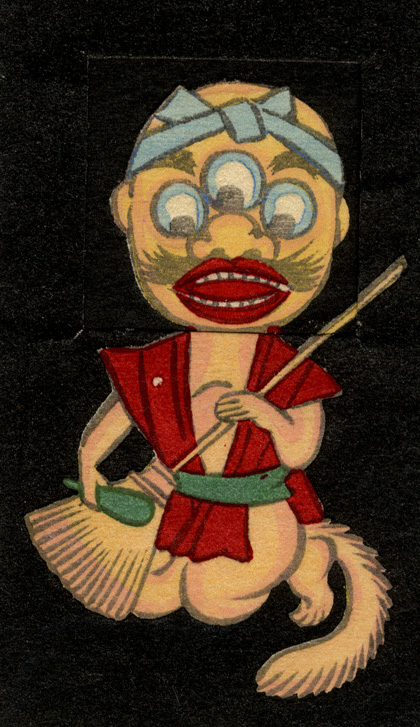

三つ目の化物が座っている。手には箒と撥のようなものを持ち、まるで三味線を弾いているかのようである。尻尾が生えている。
出典：親書誌：U426_nichibunken_0239：しん板かはりうつしゑ；シンパンカワリウツシエ／日付：2010／資源識別子：U426_nichibunken_0239_0008_0000
Copyright (c)2010- International Research Center for Japanese Studies, Kyoto, Japan. All rights reserved.